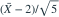
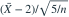

独立同分布，均值为 、方差为
独立同分布，均值为 、方差为  。以下哪个量依分布收敛到标准正态？
。以下哪个量依分布收敛到标准正态？- A
- B

- C
- D
我已思考，展开答案与解析
正确答案：D
- 样本均值方差为 ，所以标准化为

。
易错提醒分母应为标准差，且收敛速率为平方根样本量。
数学三·概率统计基础专题 · 数学三概率统计基础专题·原创第28题
按数学三常见概率统计知识点原创；不是历年真题或教材原题。
独立同分布，均值为 、方差为 。以下哪个量依分布收敛到标准正态？

。数学三·概率统计基础专题 · 数学三概率统计基础专题·原创第28题
按数学三常见概率统计知识点原创；不是历年真题或教材原题。